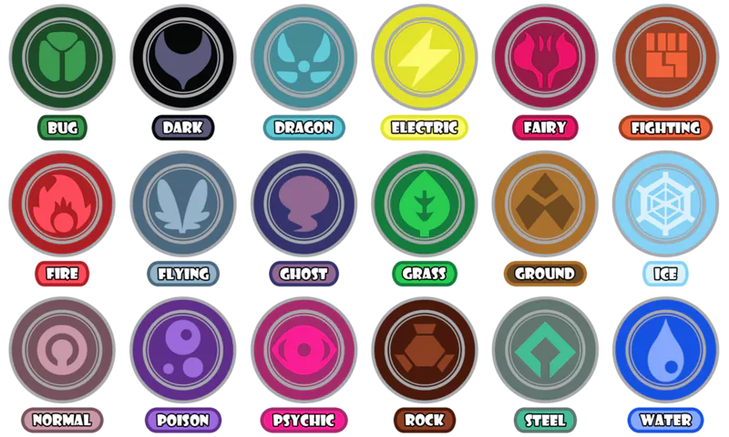

Pokemon Data Analysis
This page will show some of the statistics that will help anyone that is new to the game pokemon or a experienced player
POKEMON ELEMENTS
Each
pokemon
has different elements. This visualisation aims to show the
effectiveness of each component against the other. Some elements
are more effective against certain elements, while others are
less effective. The above image shows all the available elements
in the
pokemon
GO gameIf this game mechanic is understood. it's easy to
progress in the game

Easiest Pokemon to Catch ?
When you are new to the game It can be overwhelming to Catch a good Pokemon easilyThe following visualisation will show the Pokemon with best stats(HP|Defence|Attack)and are the easiest to catch
ATTACK
This stat shows the amount of damage a Pokemon can dealDEFENCE
High defence lowers the damage taken by enemy attacksHP
This stat Shows how much Health Points a Pokemon has
There are a lot of Pokemon in the game, It can be challenging to
find good Pokemon that are easier to catch .This visualisation
will highlight some of the best Pokemon that have high catch
rates. as these Pokemon have high base stats and are easier to
catch they are very useful for beginners
Pokemon Go Popularity all Over the World
The following map will show the Pokemon go popularity all over the world
This visualisation shows the number of times the word Pokemon
has been searched on google. A rise can be seen on July 2016.
This is the time where the most popular Pokemon game called
Pokemon go was released.
After this the trend has slowly died down.
Select the lower graph to view an enlarged graph
After this the trend has slowly died down.
Select the lower graph to view an enlarged graph
Interesting relationships between various attributes of Pokemon
Attack and the defence values of Pokemon seem to have a
positive
correlation. This means generally when the attack value of the
Pokemon increases the defence value automatically increases
and vice versa. It can be seen that most Pokemen that are on
the higher sides
Hover over the visualisation to see details
Hover over the visualisation to see details
If the correlation between height and wight is observed in
most cases it seems to be correlated and a lot of
non-legendary Pokemon have a hight under 5m and a weight under
400kg. However most of the
legendary
Pokemon and a few other non legendary Pokemon have varying
height and weight that does not go along with the normal
trend
Wight and Defence values seem to have a
positive
relationship but it is mostly clustered around the lower part
of the map as most pokemon have weights less than 400kg. there
are few outliers but most of them are
legendary
pokemon
What is a legendary pokemon ?
Legendary
Pokémon (Japanese: 伝説のポケモン
Legendary
Pokémon) are a group of incredibly rare and often very
powerful Pokémon, generally featured prominently in the
legends and myths of the Pokémon world.
According to the above charts legendary pokemon seem to be outliers. which mean their stats are better than other pokemon and als0 this proves that legendary pokemon do not follow the normal trend
According to the above charts legendary pokemon seem to be outliers. which mean their stats are better than other pokemon and als0 this proves that legendary pokemon do not follow the normal trend